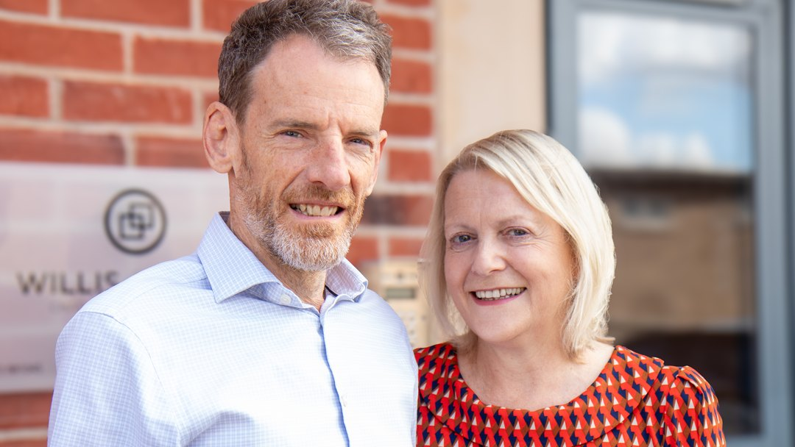

25 years of Willis Cooper: “I took my bat and ball and off I toddled”
Robert Cooper started Willis Cooper in his living room with too many clients and no business plan. Twenty-five years on, he looks back on the practice he built.
Willis Cooper Chartered Accountants
13 September 202510 min read

Robert Cooper started Willis Cooper in his living room with too many clients and no business plan. Twenty-five years on, with a loyal team and an ever-growing client base, he reflects on building a practice rooted not in strategy, but in care.
The beginning
Even from a very young age I always wanted to be self-employed. I was a partner with another practice, and the guy in charge, the senior partner, he was like probably the same age I am now. But he seemed to be quite old and set in his ways. Nice bloke, I don’t want to be knocking him. Nice piece of bloke, knew what he was doing, good accountant.
But I think I was a bit frustrated. I wanted to bring some innovation to the practice. Like a bit of CRM. When we were looking at the CRM software, I thought that’s really good. And he was like, “Oh, what do you want that for?” and stuff like that. So I thought, I’ll take my bat and ball and I’m going to leave and do my own thing. So I was probably a part of that for about five years and I thought, now I’m going to do my own thing now, so off I toddles.
People didn’t talk about business vision 26 years ago. I knew I wanted to incorporate some of the stuff happening in the software world. But basically it was just a case of, I’ll set me a business and I’ll provide the service and look after the clients and everything will just fall into place.
When I first started, I didn’t really think in terms of there’ll be a team or anything. I thought there’d be kind of a, probably an admin person, reception admin type thing. But even then, you typed up your own accounts in those days. I was going to provide the service to my clients.
When I left the previous practice, basically you’re owed goodwill, because it values the business. And so I took, rather than getting paid for any goodwill, I took a whole load of clients with me. Most of them, when they knew I was going, said “Oh, can I come? Can I come?” And so I took all of them. They were clients who came from an established chartered practice, foolishly all jump-shipped and came with me. And just like we’ve got all sorts now, there was all sorts then. So there was me in my living room. I started off in my living room. Me in the living room with a whole load of clients I couldn’t possibly service. And they were everything, from little sole traders up to multi-million-pound corporates. Just me on my tod.
The journey
I hate the word proud. Pride comes before the fall, doesn’t it? It’s been continuous, organic growth. Grown continuously, organically. We’ve got a good team. It’s all kind of grown nicely, very stable and organic, and managed to get good people to join and stay.
The biggest challenge has always been from day one. Like a fool I took all them clients, and I couldn’t possibly service them. So it’s just been relentless. Ever since day one it’s been relentless for 25, 26 years. It’s been relentless. The biggest challenge has just been the workload. Managing my workload. I’ve always had way too much work. And I’ve still not overcome it.
Have I ever felt we’ve made it? Nope. I still don’t think that. I still feel, although we have grown stably and organically and all the rest of it, I still feel that it could all go wrong around us. There’s not really a point where you can just say, yeah, that’s it now.
Our clients are constantly changing. Our work is constantly moving. And you move from being a very small practice where actually you want to bring clients in, so you’re very focused on client acquisition. And then what gradually happens over time is you come in as wolves, and then over time you become shepherds, because then you’re looking after what you’ve got. So your focus changes from going out there and getting, to actually holding on to what you’ve got.
“You come in as wolves, and then over time you become shepherds. Your focus changes from going out there and getting, to actually holding on to what you’ve got.”
I never really had that going-out-and-getting phase because I just had all these people join me. I kind of find that a bit sad, really. I never had to go out and fight for work. Getting business has never been my focus because I’ve always had referrals. It’s never been a problem. And the issue throughout the 25, 26 years is actually bringing resource to bear, so we’ve got enough resource to manage the work we’ve got to do. That’s always been the issue rather than bringing new work in.
With hindsight, I think that was a mistake. I would have liked to have gone out there and fought for business. But hey-ho, a lot of people would say, what are you moaning about? You’ve already made it with clients.
Was there ever a time I seriously questioned whether it was all going to work? No, not really. It’s been just the sheer volume of work. But I just knew I had to attend to what was needed and everything would be fine. So I’ve never been there for worry.
It kind of dawned on me very quickly that I needed help. And obviously Julie, about a month after I left, said, “I think you probably need some help, don’t you, Robert?” Yeah, I probably did. So you see Julie very quickly. And then we moved to our first proper office. There were four of us there. There was me and Julie.
The secret
It’s not rocket science. You just do your best, offer as good a service, look after them. And if you look after them they’ll generally be very forgiving of mistakes and stuff, because I think as long as the client knows that you’re loyal to them.
A long time ago, probably 25 years ago, one of the fellows who came with me from my previous practice, he said something along the lines of, “The reason we all stick by you, Robert, is because we know that you’d stick by us.”
“One of the main reasons why clients leave is because of perceived indifference. Even if you’re not indifferent, that’s what the client perceives.”
I think I’ve always been reasonable at not giving that perceived indifference. Now don’t get me wrong, I’m pretty bad at returning calls and stuff because of the relentless workload, but when I do attend to a client, I think they do feel like they’re being properly looked after. They feel that all my focus is on them and I’ve got time for them. And over the years they have struggled sometimes to get hold of me and all the rest of it, but I think they’ve always been forgiving for that reason.
I think it’s probably the care element. It’s really nebulous and all the rest of it. But for instance, I like to see all my clients, I like to meet them, see them face to face, at least once a year. And you speak to other practices and they just prepare the accounts and send them out in the post and say, “Here are your accounts, if you’ve got any questions give us a call.” We don’t work like that. We call them in and discuss the accounts, catch up, if you’ve got any issues or problems. We do it all at once.
We care. We want to know. Even preparing the accounts. We all prepare accounts, all accountants prepare accounts, but I kind of feel that even when we do that, we don’t see it as a transactional exercise. We want to see the proper picture of those figures.
How would I describe the company culture? We are very client-focused, I would say. You can speak to any of the accountants and they all say the same thing. I think client care is the kind of culture that we’re supposed to be talking about.
Looking ahead
When I first started, I think I said I liked the idea of using software and stuff. And there’s a lot more of it around now, and you’ve got to be very careful with software because you’ve still got to offer a rare client service.
We are still too reactive. We are still too deadline-driven. And the most important thing we can do is get on top of that. Which I feel like in the last two months we have. We’ve got better. We have started turning the corner.
There’s a lot of stuff we could do. We could properly segment the client base. So we know who our construction people are, we know who our employers are, we know who our retailers are, we know who our internet sellers are, who our manufacturers are. And then kind of focus on those different segments. So when there’s changes, even at its most basic, say it’s in the construction industry, we’d be able to do presentations or send out emails or phone up and say, “Oi, this is coming your way.” There’s been lots of changes in the construction industry the last few years. It would be good. We have kind of done a few seminars and stuff on CIS schemes and all the rest of it, but it needs to be more systematic.
So we need to become more proactive and less deadline-driven. And actually, I think we also need to find and build niches as well. So we try to become known as accountants in the care industry, or accountants in this industry, or accountants in that industry.
“It’s called artificial intelligence. Who knows what that’s going to bring. None of us really have any idea how it is going to impact. But it’s going to be a big, big change.”
It’s going to obviously empower clients because they can speak to AI and get answers and stuff. And then they can really engage with us when they’re already in a position where they kind of know the answer and they’re just checking in. Even now we can start to see that happen. So the relationship is going to change because clients have become more empowered.
I can now put a legal document through ChatGPT and it’ll tell me everything about a legal document. Clients can do exactly the same with tax and stuff. So this is going to be a big, big change. It’s probably going to lean more towards we will be providing a proactive service. That’s where our value will come from. Rather than giving answers, it’ll be giving advice without them having to think about it. Being proactive.
It’s going to be tricky. We don’t really know. But that’s coming our way. We’re not sure what the impact’s going to be, whether it’s all a storm in a teacup or whether it’s going to have really a fundamental impact on the industry. I’d expect it to be the latter.
Reflections
What’s my advice to someone starting their own business today? Prepare for a lot of hard work. It is very hard work. If it feels right to do it, do it. If it doesn’t, don’t do it.
A lot of people form their own businesses because they work for someone and they think, “Oh, I could do this better.” And then they go off and set up their business. And at the start, it’s just them working on their own. At the very start, they probably are out there looking for work and then the first few clients they can shower with love and provide an amazing service, whatever sector you’re in, because actually they’ve not got much work.
It kind of gets harder as you get bigger. So don’t be fooled at the start when it all seems quite easy. Because where it gets difficult is where you start employing people. And then you’re not doing two things, you’re doing three things. When you first start off, you’re doing the work and doing the sales. And then when you start employing people, you’re doing the work and doing the sales, and also you’re now trying to get other people to do the work in the same way as you. And you obviously have much less control. And that’s been all the heartache and the difficulties to start with.
“The best thing about running your own business? Being able to bring my dogs to work.”
It just turned into doggie daycare and that’s it. Which is kind of indicative of the extra freedom you have. You’re accountable to your clients but you’re not accountable to anyone else really. So there is that sense of freedom and that sense of being able to chart your own journey. It’s hard work for the rest of it, but you do have that sense of being a little bit more focused.
The most important thing and the most important piece of advice that we would give to someone starting out is: don’t be too cheap. Give yourself the right value.
How have I personally changed as a result of running Willis Cooper? Well, it’s difficult because 25 years on now and 25 years younger, so we all go through the journey of life where we change and adapt and the rest of it. And the question is how running your own business, or how running Willis Cooper, has impacted on how you’ve developed anyway. It’s very difficult because you don’t know what you would have done.
Who knows. It’s one of those questions where you don’t know what the alternative would be.
Willis Cooper celebrated 25 years in September 2025. Based on an interview with Robert Cooper.
You can meet the team, read more about the practice, or get in touch if you would like to talk to us about your own business.
Follow
info@williscooper.com
01773 881 045
Company Registration Number: 04076991
Copyright
Willis Cooper Ltd © 2026 All Rights Reserved
Willis Cooper Ltd
Derby Road
Heritage Business Centre
DE56 1SW
Belper
Unit 6
Derbyshire